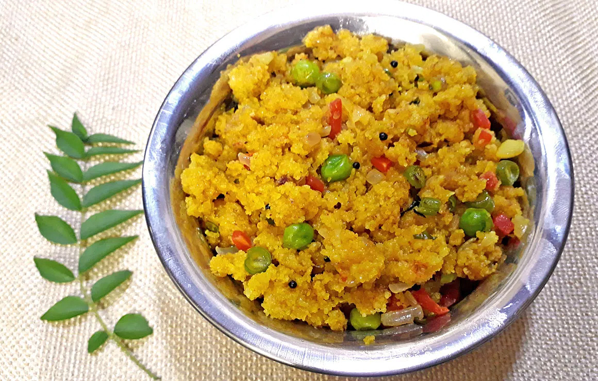

Home
Upma

Description
Upma is a savory South Indian breakfast made from semolina, cooked with
vegetables, ginger, green chilies, and tempered spices.
Ingredients
- 1 cup semolina (rava)
- 1 onion, chopped
- 1-2 green chilies, chopped
- 1 tsp ginger, grated
- 2 cups water
- 1 tsp mustard seeds
- 10 curry leaves
- 2 tbsp oil/ghee
- Salt to taste
Steps
- Roast semolina lightly and set aside.
-
Heat oil/ghee, add mustard seeds, curry leaves, ginger, and chilies.
- Add onions and sauté until translucent.
- Add water and salt, bring to boil.
-
Gradually add semolina while stirring to avoid lumps, cook until thick.
- Serve hot with chutney or pickle.